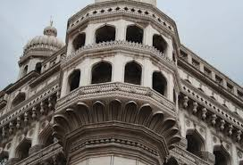

The Charminar constructed in 1591, is a monument located in Hyderabad, Telangana, India. The landmark has become known globally as a symbol of Hyderabad and is listed among the most recognised structures in India. It has also been officially incorporated as the Emblem of Telangana[3] The Charminar's long history includes the existence of a mosque on its top floor for more than 425 years. While both historically and religiously significant, it is also known for its popular and busy local markets surrounding the structure, and has become one of the most frequented tourist attractions in Hyderabad. Charminar is also a site of numerous festival celebrations, such as Eid-ul-adha and Eid al-Fitr,[4] as it is adjacent to main mosque of the city Makkah Masjid across the road. The Charminar is situated on the east bank of Musi river.[5] To the west lies the Laad Bazaar, and to the southwest lies the richly ornamented granite Makkah Masjid.[6] It is listed as an archaeological and architectural treasure on the official "List of Monuments" prepared by the Archaeological Survey of India.[7] The English name is a translation and combination of the Urdu words chār and minar or meenar, translating to "Four Pillars"; the eponymous towers are ornate minarets attached and supported by four grand arches.
The fifth ruler of the Qutb Shahi dynasty, Muhammad Quli Qutb Shah, built the Charminar in 1591 after shifting his capital from Golkonda to the newly formed city of Hyderabad. Charminar, Char Kaman and Gulzar Houz, photographed by Lala Deen Dayal in the 1880s The Archaeological Survey of India (ASI), the current caretaker of the structure, mentions in its records, "There are various theories regarding the purpose for which Charminar was constructed. However, it is widely accepted that Charminar was built at the centre of the city, to commemorate the eradication of plague", a deadly disease which was wide spread at that time.[8][9] According to Jean de Thévenot, a French traveller of the 17th century whose narration was complemented with the available Persian texts, the Charminar was constructed in the year 1591 CE, to commemorate the beginning of the second Islamic millennium year (1000 AH). The event was celebrated far and wide in the Islamic world, thus Qutb Shah founded the city of Hyderabad to celebrate the event and commemorate it with the construction of this building.Due to its architecture it is also called as Arc de Triomphe of the east
The Charminar masjid is a square structure with each side being 20 meters (approximately 66 feet) long. Each of the four sides has one of four grand arches, each facing a fundamental point that opens directly onto the street in front of it. At each corner stands an exquisitely shaped, 56 meter-high (approximately 184 feet) minaret, with a double balcony. Each minaret is crowned by a bulbous dome with dainty, petal-like designs at the base. Unlike the minarets of Taj Mahal, Charminar's four fluted minarets are built into the main structure. There are 149 winding steps to reach the upper floor. The structure is also known for its profusion of stucco decorations and the arrangement of balustrades and balconies.[21]
The structure is made of granite, limestone, mortar, and pulverised marble, weighing approximately 14,000 tones apiece.[22] Initially the monument was so proportionately planned that when the fort first opened, one could see all four corners of the bustling city of Hyderabad through each of its four grand arches, as each arch faced one of the most active royal ancestral streets.